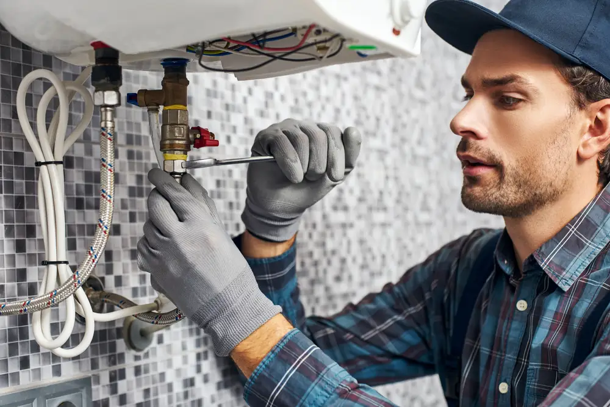

January 2, 2020
Plumbing systems go through a lot during the holidays—how many dishes and clothing will you be washing to keep up with the many parties and family dinners? With that in mind, what would you do if you found a burst pipe in your kitchen, basement, or attic?
Here are just 4 ways you can secure your plumbing system this holiday season.
Allow Your Faucets to Drip
A leaky faucet is often the source of frustration for homeowners, but did you know that letting your taps trickle can help prevent pipes from freezing and bursting?
Burst pipes are not necessarily caused by ice, but an excess pressure inside the tubes that the pipes can’t handle. By opening up your faucets and letting a soft drip or trickle happen, you can help relieve the pressure in your pipes and start melting any ice inside.
Outside Doors Closed, Inside Doors Open
Keeping your exterior doors closed in the winter is a no-brainer, otherwise you’d be freezing your pipes and your whole family too!
However, keeping all of the doors inside your home open can actually go a long way in securing your pipes, as it will allow the heat inside your home to spread out evenly and make sure all of your plumbing is equally heated.
Wrap Your Pipes Up Nice and Tight
Keeping the temperature inside your house even across all spaces is important, but if there are areas of your house that don’t have direct access to this heat, you may want to consider investing in insulation wraps.
Plumbing networks in basements and attics are most at risk of breaking, but you can help keep your pipes sturdy by wrapping them in insulation or electric cords and blankets.
Seal Up Any Cracks In Your Foundation
Cracks in your foundation may be an eyesore in the summer, but they can be a serious danger to your home in the winter as they can let in water that will freeze and expand, causing even more damage.
Take a look around your property and caulk or cement any cracks you find, especially if they are in an area that contains pipes.
Don’t let a burst pipe ruin your holiday season—call the plumbing experts at Goff Heating/Air Conditioning & Plumbing at 903-838-6923 or visit us online and book your inspection today.